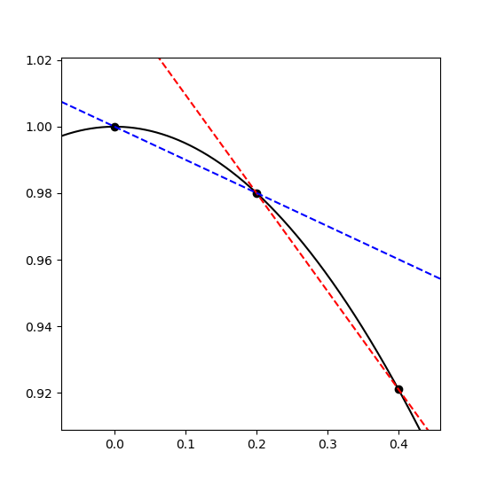
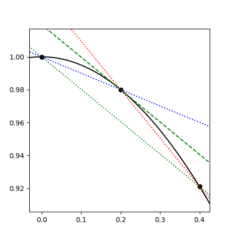

Suppose we want to numerically take the derivative of a function \(f\), in either functional form or as a list of evenly spaced values. For example, we might have \(f(x) = cos(x)\) and we want to represent is as an array \(F\) of length \(n\) in the range \([0, 1]\), we could define
$$\Delta x=\frac{1 - 0}{n - 1}$$
and let $$F[k] = f(0 + k\Delta x)\hspace{3ex}\forall k\in\{0,1,\dots,n-1\}.$$
Perhaps the most obvious thing to is to just use the definition of the derivative as our model, so, since
$$f'(x)=\lim_{h\rightarrow0}\frac{f(x+h)-f(x)}{h},$$ we can define $$F'[i] = \frac{F'[i+1]-F'[i]}{\Delta x}$$
Of course, it would have been equally valid to think of \(h\) as a negative value approaching 0. Thinking of it this way, we might write the derivative as
$$F'[i] = \frac{F'[i]-F'[i-1]}{\Delta x}$$
Graphically, we'd represent this as
Where the black curve is a segment of the plot of \(cos(x)\), the dashed redline is the linear approximation of \(cos(x)\) at 0.2 using the "forward" approximation of the derivative, and the dashed blue line is the linear approximation using the "backward" approximation of the derivative.
In the image, however, we can see that one approximation overshoots and the other undershoots the true value of the derivative. If we look at the first fewterms of the taylor series of \(f\),
$$f(x+h) = f(x) + f'(x)h + \frac{f''(x)}{2}h^2 + \dots$$
So the leading error in our approximation of \(\frac{f(x+h)-f(x)}{h}\) is \(\frac{f''(x)}{2}h\). This means that, unless we're looking at an inflection point (where \(f''(x)=0\)), the forward and backward approximations will err on opposite ends of the true derivative.
This suggests that the average of the two approximations would be better:
$$\frac{ \frac{f(x+h)-f(x)}{h} + \frac{f(x)-f(x-h)}{h} }{2} = \frac{f(x+h)-f(x-h)}{2h}.$$
Looking at the graphed results, we definitely see a big improvement:
Here, the (now dotted) red and blue lines are the same, but not the green lines have the new averaged or "centered" slope, with the dotted green line being the cord connecting \(f(x-h)\) and \(f(x+h)\), and the dashed green line being the same cord translated to intersect \((x, f(x))\).
We can get a more rigorous explanation for this improvement by looking at the Taylor series of this new approximation:
$$\begin{align*} f(x+h) - f(x-h) &= f(x) + f'(x)h + \frac{f''(x)}{2}h^2 + \frac{f'''(x)}{6}h^3 +\dots\\ &- f(x) + f'(x)h - \frac{f''(x)}{2}h^2 + \frac{f'''(x)}{6}h^3 - \dots\\ &= 2f'(x)h + \frac{f'''(x)}{3}h^3 + \dots\end{align*}$$
So $$\frac{f(x+h) - f(x-h)}{2h} = f'(x) + \frac{f'''(x)}{6}h^2 + \dots$$
Now, our error is \(O(h^2)\) (rather than \(O(h)\)), which is a good improvement! So it's better to approximate our derivative as
$$F'[i] = \frac{F[i + 1] - F[i - 1]}{2h}$$
than as a simple forward or backward approximation.
It'' be convenient at this point to not that we can represent these finite difference approximations of the derivative as a matri. This should almost be expected, considering differentiation is a linear operator and how all lineaer functions on finite vector spaces can eb represented as matrices.
By considering its action, the forward difference \(f(x+h)-f(x)\) can be represented by the nxn matrix (with n = 7 here)
$$\Delta_+ \equiv \left[\begin{array}{rr}-1&1&0&0&0&0&0\\0&-1&1&0&0&0&0\\0&0&-1&1&0&0&0\\0&0&0&-1&1&0&0\\0&0&0&0&-1&1&0\\0&0&0&0&0&-1&1\\0&0&0&0&0&0&-1\end{array}\right],$$
the backward difference \(f(x)-f(x-h)\) as
$$\Delta_- \equiv \left[\begin{array}{rr}1&0&0&0&0&0&0\\-1&1&0&0&0&0&0\\0&-1&1&0&0&0&0\\0&0&-1&1&0&0&0\\0&0&0&-1&1&0&0\\0&0&0&0&-1&1&0\\0&0&0&0&0&-1&1\end{array}\right],$$
and the centered difference \(f(x+h) - f(x-h)\) as
$$\Delta_0 \equiv \left[\begin{array}{rr}0&1&0&0&0&0&0\\-1&0&1&0&0&0&0\\0&-1&0&1&0&0&0\\0&0&-1&0&1&0&0\\0&0&0&-1&0&1&0\\0&0&0&0&-1&0&1\\0&0&0&0&0&-1&0\end{array}\right],$$
where we divide by the appropriate spacing (\(\frac1h\Delta_-\), \(\frac1h\Delta_+\), \(\frac1{2h}\Delta_0\)) to use it as a derivative.
You might have noticed that the bottom row of \(\Delta_+\) and the top row of \(\Delta_-\) don't fit the pattern set y the rest of the rows. If you're worried this is an artifact of our matrix representation, worry not as these anomalies were present in our algebraic representation as well. For example, what value do you use for \(f(x-h)\) when we only have defined \(f\) on values greater than x?
We can still consider the implications though. By simply truncating the matrices at some finite size, we are implicity assuming that \(f(x)=0\) outside of our interval.
Of course, if we are approximating our derivatives as finite differences which can be represented as matrices, it's easy to consider how we might take a second derivative. Just apply our finite differences twice!
But which ones? We get difference answers depending on our order:
$$\Delta_+\Delta_+ = \left[\begin{array}{rr}1&-2&1&0&0&0&0\\0&1&-2&1&0&0&0\\0&0&1&-2&1&0&0\\0&0&0&1&-2&1&0\\0&0&0&0&1&-2&1\\0&0&0&0&0&1&-2\\0&0&0&0&0&0&1\end{array}\right]$$
$$\Delta_-\Delta_- = \left[\begin{array}{rr}1&0&0&0&0&0&0\\-2&1&0&0&0&0&0\\1&-2&1&0&0&0&0\\0&1&-2&1&0&0&0\\0&0&1&-2&1&0&0\\0&0&0&1&-2&1&0\\0&0&0&0&1&-2&1\end{array}\right]$$
$$\Delta_+\Delta_- = \left[\begin{array}{rr}-2&1&0&0&0&0&0\\1&-2&1&0&0&0&0\\0&1&-2&1&0&0&0\\0&0&1&-2&1&0&0\\0&0&0&1&-2&1&0\\0&0&0&0&1&-2&1\\0&0&0&0&0&1&-1\end{array}\right]$$
$$\Delta_-\Delta_+ = \left[\begin{array}{rr}-1&1&0&0&0&0&0\\1&-2&1&0&0&0&0\\0&1&-2&1&0&0&0\\0&0&1&-2&1&0&0\\0&0&0&1&-2&1&0\\0&0&0&0&1&-2&1\\0&0&0&0&0&1&-2\end{array}\right]$$
They all display a common 1, -2, 1 pattern, but you might notice that while this pattern is centered on the diagonal for \(\Delta_-\Delta_+\) and \(\Delta_+\Delta_-\), it is not for \(\Delta_+\Delta_+\) and \(\Delta_-\Delta_-\). These latter two correspond to to
$$\frac{f(x+2h)-2f(x+h)+f(x)}{h^2}\hspace{3ex}\text{and}\hspace{3ex}\frac{f(x)-2f(x-h)+f(x-2h)}{h^2}.$$
While these are both approximations of \(f''(x)\), they both have \(O(h)\) error. The cenetered version, \(\frac{f(x+h)-2f(x)+f(x-h)}{h^2}\), as seen in \(\Delta_-\Delta_+\) and \(\Delta_+\Delta_-\), has \(O(h^2)\) error. Fundamentally, this is because we have equal contributions for \(f(x + h)\) and \(f(x - h)\); the odd terms of their Taylor series' canel out (as \(h^3 + (-h)^3 = 0\)). You might remember this from our examination of the centered difference earlier.
But what do we make of the -1 terms in the corners of \(\Delta_-\Delta_+\) and \(\Delta_+\Delta_-\)? Given that the terms are on the boundries of the matrices, we can think of them as boundry conditions. To elaborate, suppose we have a differential equation \(\frac{d^2u}{dx^2}=f\). We could try solving this by representing \(\frac{d^2}{dx^2}\) as a second finite difference on an interval \([a, b]\). For example
$$\frac{1}{h^2}\Delta_+\Delta_-U=F$$
where \(U\) is the vectorized representation of our unknown \(u\) and \(F\) of our driving function \(f\). If we assume that \(u(a-h)=0\),
$$\frac{u(a+h)-2u(a)+u(a-h)}{h^2}=\frac{u(a+h)-2u(a)}{h^2},$$
which corresponds to \(\Delta_+\Delta_-\)'s top-left corner.
Conversely, if we assume \(u'(a)=0\), then for sufficiently small \(h)\), \(u(a)\approx u(a-h)\), so
$$\frac{u(h+h)-2u(a)+u(a-h)}{h^2} = \frac{u(a+h)-u(a)}{h^2},$$
which corresponds to the top left corner of \(\Delta_-\Delta_+\).
This means our choice between \(\Delta_-\Delta_+\) and \(\Delta_+\Delta_-\) is not arbitrary, and we might choose neither. Instead we set the top and bottom rows by considering our boundary conditions. Consider, for example, a periodic boundary condition where \(u(a-h)=u(b)\) and \(u(b+h)=u(a)\). Then the appropriate difference to approximate the second derivative would be
$$\left[\begin{array}{rr}-2&1&0&0&0&0&1\\1&-2&1&0&0&0&0\\0&1&-2&1&0&0&0\\0&0&1&-2&1&0&0\\0&0&0&1&-2&1&0\\0&0&0&0&1&-2&1\\1&0&0&0&0&1&-2\end{array}\right].$$
You might have wondered why we considered only products of \(\Delta_-\) and \(\Delta_+\), neglecting \(\delta_-\) despite its better error margin. This is because products of \(\Delta_0\) are "wider" so to speak. For example
$$\Delta_0\Delta_0=\left[\begin{array}{rr}-1&0&1&0&0&0&0\\0&-2&0&1&0&0&0\\1&0&-2&0&1&0&0\\0&1&0&-2&0&1&0\\0&0&1&0&-2&0&1\\0&0&0&1&0&-2&0\\0&0&0&0&1&0&-1\end{array}\right]$$
but this is just like our 1, -2, 1 pattern from before, except with a step size of \(2h\) rather than \(h\). Consequently, it still only has a \(O(h^2)\) error, yet now our boundary conditions are affecting the second and penultimate rows as well, which is not something we want under ordinary circumstances.
It's even worse for the other products, since \(\Delta_0\Delta_+\), \(\Delta_+\Delta_0\), \(\Delta_0\Delta_-\), \(\Delta_-\Delta_0\) aren't symmetric, and thus don't cancel out the odd ordered terms of their corresponding Taylor expansions, resulting in only \(O(h)\) errors.
If, however, we don't mind wider rows, we can get a better approximation of \(\frac{d^2}{dx^2}\) with \(O(h^4)\) error by choosing our coefficients more intelligently. By balancing our \(+h\) and \(-h\) terms, we can eliminate the odd terms of the Taylor series', but to eliminate higher order even terms, we need to introduce additional evaluation points frther from \(x\). For example, the degree 4 term of \(f(x+h)\) is \(\frac{f^{(4)}(x)}{24}h^4\), whereas the degree 4 term of \(f(x+2h)\) is \(\frac{16f^{(4)}(x)}{24}h^4\).
Hence \(16f(x+h) - f(x+2h)\) will have no \(4^{th}\) degree term. We add their complements to cancel out the odd dgree terms,
$$-f(x+2h)+16f(x+h)+16f(x-h)-f(x-2h),$$
and then subtract out the uncancelled copies of \(f(x)\) to elimante the constant term:
$$-f(x+2h)+16f(x+h)-30f(x)+16f(x-h)-f(x-2h).$$
Of course, I've done nothing to ensure our answer is normalized, so, checking the value of the second order term:
$$\left(-\frac{4f''(x)}{2}h^2+16\frac{f''(x)}{2}h^2\right)\times 2\text{ (from the x-h, and x-2h terms)}$$
gives \(12h^2f''(x)\), we just divide the whole difference by \(12h^2\) to get the second derivative with \(O(h^4)\) error:
$$\frac{-f(x+2h)+16f(x+h)-30f(x)+16f(x-h)-f(x-2h)}{12h^2}=f''(x)+O(h^2).$$
If you don't believe me, just expand out the Taylor series and check for yourself.